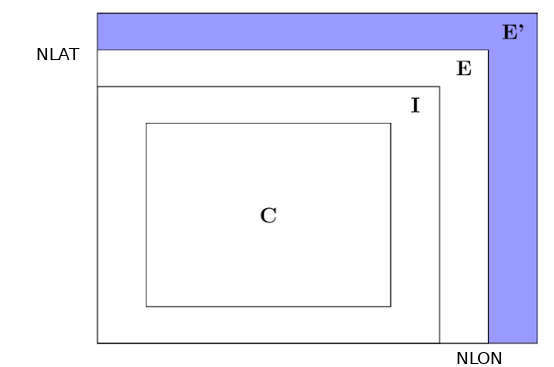

Extension zones
There are two types of extension zone, inner E or
outer E', see figure.
Only one of them can have non-zero size(s).
E always has the same dimension in x- and y-directions,
but E' dimensions can differ.
To specify E, set E'-zoney = 0.
If both dimensions are non-zero, E' is assumed.
The prime factor constraints apply to
Nlon + E'-zonex and Nlat + E'-zoney.
